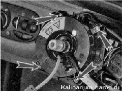

Подрулевые переключатели снятие, проверка и установка
Подрулевые переключатели следует снимать по отдельности в случае их проверки и замены. Перед разборкой рулевой колонки и других подобных работ подрулевые переключатели целесообразно снять вместе с соединителем.
Для выполнения работы потребуется мультиметр.
Снятие подрулевых переключателей
1. Подготавливаем автомобиль к выполнению работы и отсоединяем клемму провода от отрицательного вывода аккумуляторной батареи.
2. Снимаем декоративные накладки рулевой колонки.
3. Сжав пружинные фиксаторы правого переключателя, извлекаем его из соединителя вместе с подключенной колодкой жгута проводов.
4. Отсоединяем колодку жгута проводов от переключателя.

Положение рычагов подрулевых переключателей: А — левый подрулевой переключатель (переключатель света фар и указателей поворота); Б — правый подрулевой переключатель (переключатель стеклоочистителей и омывателей)
Примечание. Пунктиром показаны положения, в которых рычаги переключателей не фиксируются. В рычаг правого переключателя встроены две кнопки управления маршрутным компьютером.
Замыкание контактов при различных положениях рычагов подрулевых переключателей
Положение рычага переключателя |
Левый переключатель |
Правый переключатель |
||
Выводы замкнутых контактов* |
Включаемое электрооборудование |
Выводы замкнутых контактов* |
Включаемое электрооборудование |
|
1 |
49a-49aL |
Указатель левого поворота |
53е-53 |
Очиститель ветрового стекла выключен |
49a-49aL |
Указатель левого поворота |
53е-53 53a-j |
Кратковременная работа очистителя ветрового стекла |
|
3 |
— |
Указатели поворота выключены |
53е-53 53a-j |
Прерывистая работа очистителя ветрового стекла |
56-56b |
Ближний свет фар |
|||
4** |
49a-49aR |
Указатель правого поворота |
53е-53 53а-53 |
1-я скорость очистителя ветрового стекла |
5 |
49a-49aR |
Указатель правого поворота |
53е-53 53а-53 |
2-я скорость очистителя ветрового стекла |
6** |
30-56a |
Сигнализация дальним светом фар |
53е-53 53ah-53W |
Омыватель ветрового стекла. Омыватель и очиститель фар*** |
56-56b |
Ближний свет фар |
|||
7 |
56-56a |
Дальний свет фар |
53е-53 53ah-53H |
Очиститель заднего стекла |
8»» |
- |
- |
53е-53 53ah-53H |
Очиститель заднего стекла |
53ah-WH |
Омыватель заднего стекла |
|||
* Обозначения выводов нанесены на корпус переключателя.
** Нефиксированное положение.
*** Устанавливается на часть автомобилей.
5. Разъединяем колодку жгута проводов кнопок управления маршрутным компьютером.
6. Аналогично снимаем левый подрулевой переключатель.
Проверка
Мультиметром в режиме омметра проверяем замыкание контактов в переключателях при различных положениях рычага переключателя.
Порядок замыкания контактов при различных положениях рычагов переключателей представлен в таблице 13.9.1.
Установка подрулевых переключателей
Устанавливаем переключатели в обратной последовательности.
Снятие соединителя
1. Снимаем декоративные накладки рулевой колонки.
2. Снимаем рулевое колесо.
3. Снимаем подрулевые переключатели (см. выше).
4. На автомобилях с подушкой безопасности водителя отсоединяем колодку проводов от контактного кольца.
Снять соединитель можно в сборе с контактным кольцом. При необходимости отворачиваем четыре самореза и снимаем контактное кольцо с рулевого вала.
При снятии рулевого колеса подвижная часть контактного кольца фиксируется запорным механизмом, что предотвращает ее вращение. Не следует нажимать на кольцо фиксатора, и вращать подвижную часть контактного кольца. В результате при сборке может быть нарушено центральное положение подвижной части кольца. При этом велика вероятность повреждения контактного кольца при повороте рулевого колеса в одно из крайних положений.
5. Отсоединяем колодку проводов выключателя звукового сигнала.
6. Торцовым ключом на 8 мм ослабляем затяжку болта крепления соединителя подрулевых переключателей и снимаем соединитель с рулевой колонки
Установка соединителя
1. Устанавливаем соединитель на рулевую колонку.
2. Слегка затягиваем стяжной болт крепления соединителя (так, чтобы положение переключателя можно было изменять усилием руки).
Необходимо установить соединитель подрулевых переключателей в такое положение, при котором центральный саморез крепления нижней накладки рулевой колонки можно было бы завернуть в соответствующее отверстие соединителя.
3. Устанавливаем нижнюю накладку рулевой колонки на место и крестовой отверткой заворачиваем два самореза крепления накладки к поперечине панели приборов.
4. Регулируем положение соединителя на рулевой колонке, добиваясь возможности заворачивать центральный саморез крепления накладки рулевой колонки в соответствующее отверстие соединителя.
5. Найдя оптимальное положение соединителя, выворачиваем два самореза и снимаем нижнюю накладку рулевой колонки.
6. Не смещая соединитель, затягиваем болт его крепления.
7. Дальнейшую работу выполняем в последовательности, обратной снятию.